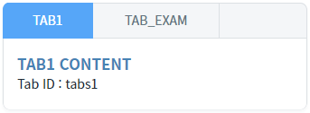
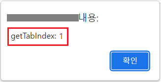
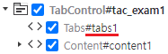

TabControl의 'getTabIndex' 메소드를 사용하여 탭의 아이디로 인덱스를 반환받는 예제입니다.
탭의 ID로 탭의 Index 반환받기
1
STEP 1: 초기 상태를 확인합니다.
TabControl에 2개의 탭이 구성되어 있고, 각 탭의 ID는 다음과 같습니다.
탭 'TAB1'의 ID : tabs1
탭 'TAB_EXAM'의 ID : tab_exam
Image 1.브라우저(Chrome) 실행 예시

2
STEP 2: 탭의 ID가 'tabs1'인 탭의 Index를 확인합니다.
'탭의 ID가 'tabs1'인 탭의 Index 반환받기' 버튼을 클릭합니다.3
STEP 3: 실행된 결과를 확인합니다.
탭의 Index가 브라우저 alert으로 출력됩니다. 출력 값 : 'getTabIndex: 0'
Image 2.브라우저(Chrome) 실행 예시
4
STEP 4: 탭의 ID가 'tab_exam'인 탭의 Index를 확인합니다.
'탭의 ID가 'tab_exam'인 탭의 Index 반환받기' 버튼을 클릭합니다.5
STEP 5: 실행된 결과를 확인합니다.
탭의 Index가 브라우저 alert으로 출력됩니다. 출력 값 : 'getTabIndex: 1'
Image 3.브라우저(Chrome) 실행 예시

TabControl의 'getTabIndex' 메소드를 사용하여 스크립트를 작성합니다. 세부 설정은 아래의 스크립트 예시에 작성되어 있습니다.
Example 1.Script
//예제 파일에서는 스크립트 scwin.btn_exam1_1_onclick에 작성되어 있습니다. // TabControl 'tac_exam1'의 탭 ID가 'tabs1'인 탭의 Index 반환받습니다. var result = tac_exam1.getTabIndex("tabs1"); // 반환 값 예시) 0
Image 4.웹스퀘어 스튜디오의 '디자인' 탭 - 컴포넌트 예시

getTabIndex( tabID )